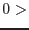

| Parameter | Mand | Type | Default | Constraints |
| attsource | no | string | odf | odf|atthk |
Source of the attitude data. If this equals `odf', the environment variable SAS_ODF must be set to point to the appropriate ODF.
|
| odfattsource | no | string | ahf | ahf|om |
Whether to use the Attitude History File or the OM pointing history file from the ODF. This parameter is read if attsource=`odf'.
|
| timesource | no | string | user | user|eventlist |
If this = `user', the task reads parameters tstart, tstop (or datestrstart and datestrstop) and tstep, and constructs the sequence of attitude sample times from these numbers; if it = `eventlist', the event times from the event list supplied to parameter eventset are used.
|
| usertimestyle | no | string | timestamp | timestamp|datetimestr |
This parameter is read if timesource=`user'. If `timestamp' is specified, the start and stop times are read from parameters tstart and tstop as double-precision `timestamps' (seconds since the XMM-Newton reference epoch). If usertimestyle=`datetimestr', the start and stop times are read from parameters datestrstart and datestrstop as strings.
|
| tstart | yes | real | 0.0d0 | |
Time stamp of the first time sample. This is read if timesource=`user' and usertimestyle=`timestamp'.
|
| tstop | yes | real | 0.0d0 | |
Time stamp of the last allowed time sample. This is read if timesource=`user' and usertimestyle=`timestamp'.
|
| datestrstart | yes | string | 0000-00-00T00:00:00 | |
Date-time string of the first time sample. This is read if timesource=`user' and usertimestyle=`datetimestr'.
|
| datestrstop | yes | string | 0000-00-00T00:00:00 | |
Date-time string of the last allowed time sample. This is read if timesource=`user' and usertimestyle=`datetimestr'.
|
| tstep | yes | real | 1.0 | tstep |
Separation between successive time samples. This is read if timesource=`user'.
|
| eventset | yes | dataset | | |
Name of the event-list dataset which supplies time samples from the event times. This is read if timesource=`eventlist'.
|
| pntkwdset | yes | dataset | | |
Name of the dataset from which to read the spacecraft average pointing keywords (usually expected to be the output file of atthkgen). This parameter is read if attsource=`odf' and timesource=`eventlist'.
|
| atthkset | yes | dataset | | |
The dataset (normally this would be expected to be the output files from task atthkgen) which contains samples of the spacecraft attitude. This is read if attsource=`atthk'.
|
| atthkattsource | no | string | ahf | ahf|om |
Whether to use the Attitude History File data or the OM pointing history data from the atthkset file. This parameter is read if attsource=`atthk'.
|
| binnedattset | no | dataset | binned_att.ds | |
The dataset which is to contain the binned attitude data.
|
| maxdelta | no | real | 0.02 |  maxdelta maxdelta |
A new attitude bin is started if the attitude jumps by more than this amount (in arcsec).
|
| withmedianpnt | no | boolean | yes | |
Whether to use/calculate median or mean pointing for the *_PNT keywords (and, if attsource=`atthk', whether to access the mean or median atthk data).
|
| Parameter | Mand | Type | Default | Constraints |